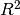
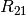
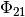

plotypus.lightcurve module¶
Light curve fitting and plotting functions.
-
plotypus.lightcurve.make_predictor(regressor=LassoLarsIC(), Selector=GridSearchCV, fourier_degree=(2, 25), selector_processes=1, use_baart=False, scoring='r2', scoring_cv=3, **kwargs)[source]¶ Makes a predictor object for use in
get_lightcurve().Parameters
- regressor : object with “fit” and “transform” methods, optional
- Regression object used for solving Fourier matrix
(default
sklearn.linear_model.LassoLarsIC()). - Selector : class with “fit” and “predict” methods, optional
- Model selection class used for finding the best fit
(default
sklearn.grid_search.GridSearchCV). - selector_processes : positive integer, optional
- Number of processes to use for Selector (default 1).
- use_baart : boolean, optional
- If True, ignores Selector and uses Baart’s Criteria to find the Fourier degree, within the boundaries (default False).
- fourier_degree : 2-tuple, optional
- Tuple containing lower and upper bounds on Fourier degree, in that order (default (2, 25)).
- scoring : str, optional
- Scoring method to use for Selector. This parameter can be:
- “r2”, in which case use  (the default)
- “mse”, in which case use mean square error
- scoring_cv : positive integer, optional
- Number of cross validation folds used in scoring (default 3).
Returns
- out : object with “fit” and “predict” methods
- The created predictor object.
-
plotypus.lightcurve.get_lightcurve(data, copy=False, name=None, predictor=None, periodogram=Lomb_Scargle, sigma_clipping=mad, scoring='r2', scoring_cv=3, scoring_processes=1, period=None, min_period=0.2, max_period=32, coarse_precision=1e-5, fine_precision=1e-9, period_processes=1, sigma=20, fourier_form="sin_cos", shift=None, min_phase_cover=0.0, n_phases=100, verbosity=None, **kwargs)[source]¶ Fits a light curve to the given data using the specified methods, with default behavior defined for all methods.
Parameters
- data : array-like, shape = [n_samples, 2] or [n_samples, 3]
- Photometry array with columns time, magnitude, and (optional) error. time should be unphased.
- name : string or None, optional
- Name of star being processed.
- predictor : object that has “fit” and “predict” methods, optional
- Object which fits the light curve obtained from data after rephasing
(default
make_predictor(scoring=scoring, scoring_cv=scoring_cv)). - periodogram : function, optional
- Function which finds one or more periods. If period is already
provided, the function is not used. Defaults to
plotypus.periodogram.Lomb_Scargle() - sigma_clipping : function, optional
- Function which takes an array and assigns sigma scores to each element.
Defaults to
plotypus.utils.mad(). - scoring : str, optional
- Scoring method used by predictor. This parameter can be
- “r2”, in which case use
R^2()(the default) - “mse”, in which case use mean square error
- “r2”, in which case use
- scoring_cv : positive integer, optional
- Number of cross validation folds used in scoring (default 3).
- scoring_processes : positive integer, optional
- Number of processes to use for scoring cross validation (default 1).
- period : number or None, optional
- Period of oscillation used in the fit. This parameter can be:
- None, in which case the period is obtained with the given periodogram function (the default).
- A single positive number, giving the period to phase data.
- min_period : non-negative number, optional
- Lower bound on period obtained by periodogram (default 0.2).
- max_period : non-negative number, optional
- Upper bound on period obtained by periodogram (default 32.0).
- course_precision : positive number, optional
- Precision used in first period search sweep (default 1e-5).
- fine_precision : positive number, optional
- Precision used in second period search sweep (default 1e-9).
- period_processes : positive integer, optional
- Number of processes to use for period finding (default 1).
- sigma : number, optional
- Upper bound on score obtained by sigma_clipping for a point to be considered an inlier.
- fourier_form : str, optional
Return coefficients for the Fourier series of the given form Form of coefficients in Fourier series
- “sin_cos”, a_k sin(kwt) + b_k cos(kwt) (the default)
- “sin”, A_k sin(kwt + Phi_k)
- “cos”, A_k cos(kwt + Phi_k)
- shift : number or None, optional
- Phase shift to apply to light curve if provided. Light curve is shifted
such that max light occurs at
phase[0]if None given (default None). - min_phase_cover : number on interval [0, 1], optional
- Fraction of binned light curve that must contain points in order to proceed. If light curve has insufficient coverage, a warning is printed if “outlier” verbosity is on, and None is returned (default 0.0).
- n_phases : positive integer
- Number of equally spaced phases to predict magnitudes at (default 100)
- verbosity : list or None, optional
- Verbosity level. See
plotypus.utils.verbose_print().
Returns
- out : dict
- Results of the fit in a dictionary. The keys are:
- name : str or None
The name of the star.
- period : number
The star’s period.
- lightcurve : array-like, shape = [n_phases]
Magnitudes of fitted light curve sampled at sample phases.
- coefficients : array-like, shape = [degree+1, 2]
Fitted light curve coefficients.
- coefficient_errors : array-like, shape = [degree+1, 2]
Errors in coefficients
- fourier_ratios : array-like, shape = [degree-1, 2]
Ratios and phase deltas in Fourier coefficients, e.g.  and 
- fourier_ratio_errors : array-like, shape = [degree+1, 2]
Errors in fourier_ratios
- phased_data : array-like, shape = [n_samples]
data transformed from temporal to phase space.
- model : predictor object
The predictor used to fit the light curve.
- R2 : number
The score of the fit.
- MSE : number
The mean square error of the fit.
- degree : positive integer
The degree of the Fourier fit.
- shift : number
The phase shift applied.
- coverage : number on interval [0, 1]
The light curve coverage.
See also
-
plotypus.lightcurve.get_lightcurve_from_file(file, *args, use_cols=None, skiprows=0, **kwargs)[source]¶ Fits a light curve to the data contained in file using
get_lightcurve().Parameters
- file : str or file
- File or filename to load data from.
- use_cols : iterable or None, optional
- Iterable of columns to read from data file, or None to read all columns (default None).
- skiprows : number, optional
- Number of rows to skip at beginning of file (default 0)
Returns
- out : dict
- See
get_lightcurve().
-
plotypus.lightcurve.find_outliers(data, predictor, sigma, method=mad)[source]¶ Returns a boolean array indicating the outliers in the given data array.
Parameters
- data : array-like, shape = [n_samples, 2] or [n_samples, 3]
- Photometry array containing columns phase, magnitude, and (optional) error.
- predictor : object that has “fit” and “predict” methods, optional
- Object which fits the light curve obtained from data after rephasing.
- sigma : number
- Outlier cutoff criteria.
- method : function, optional
- Function to score residuals for outlier detection
(default
plotypus.utils.mad()).
Returns
- out : array-like, shape = data.shape
- Boolean array indicating the outliers in the given data array.
-
plotypus.lightcurve.savetxt_lightcurve(filename, phased_magnitudes, fmt)[source]¶ Save a phased lightcurve to a text file.
Parameters
- filename : str
- File to save lightcurve table to. Directory must exist.
- phased_magnitudes: array-like, shape = [n_samples]
- Array of phased magnitudes.
- fmt : str
- Number format string, as understood by
np.savetxt().
Returns
None
-
plotypus.lightcurve.plot_lightcurve(*args, engine='mpl', **kwargs)[source]¶ Parameters
- engine : str, optional
- Engine to use for plotting, choices are “mpl” and “tikz” (default “mpl”)
- kwargs :
- See
plot_lightcurve_mpl()andplot_lightcurve_tikz(), depending on engine specified.
Returns
- plot : object
- Plot object. Type depends on engine used. “mpl” engine returns a matplotlib.pyplot.Figure object, and “tikz” engine returns a str.
-
plotypus.lightcurve.plot_lightcurve_mpl(name, data, data_smooth, period=None, periodic=False, shift=0.0, cycles=2.0, output=None, legend=False, sanitize_latex=False, color=True, n_phases=100, err_const=0.005, **kwargs)[source]¶ plot_lightcurve(name, lightcurve, period, phased_data, output=None, legend=False, color=True, n_phases=100, err_const=0.005, **kwargs)
Save a plot of the given lightcurve to file output, using matplotlib and return the resulting plot object.
Parameters
- name : str
- Name of the star. Used in plot title.
- data : array-like, shape = [n_samples, 2] or [n_samples, 3]
- Photometry array containing columns time, magnitude, and (optional) error. time should be unphased.
- data_smooth : array-like, shape = [n_samples, 2] or [n_samples, 3]
- Fitted lightcurve.
- period : number, optional
- Period to phase time by, or no period if data are to be left in the time domain..
- shift : number, optional
- Phase shift to apply, (default 0.0).
- cycles : number, optional
- Number of period cycles to display (default 2.0).
- output : str, optional
- File to save plot to (default None).
- legend : boolean, optional
- Whether or not to display legend on plot (default False).
- color : boolean, optional
- Whether or not to display color in plot (default True).
- n_phases : integer, optional
- Number of phase points in fit (default 100).
- err_const : number, optional
- Constant to use in absence of error (default 0.005).
Returns
- plot : matplotlib.pyplot.Figure
- Matplotlib Figure object which contains the plot.
-
plotypus.lightcurve.plot_lightcurve_tikz(name, data, lightcurve, period, coefficients, shift=0.0, cycles=2.0, output=None, legend=False, sanitize_latex=False, color=True, n_phases=100, err_const=0.005, **kwargs)[source]¶ plot_lightcurve(name, lightcurve, period, phased_data, output=None, legend=False, color=True, n_phases=100, err_const=0.005, **kwargs)
Save TikZ source code for a plot of the given lightcurve to file output, and return the string holding the source code.
Parameters
- name : str
- Name of the star. Used in plot title.
- lightcurve : array-like, shape = [n_samples]
- Fitted lightcurve.
- period : number
- Period to phase time by.
- phased_data : array-like, shape = [n_samples, 2] or [n_samples, 3]
- Photometry array containing columns time, magnitude, and (optional) error. time should be unphased.
- output : str, optional
- File to save plot to (default None).
- legend : boolean, optional
- Whether or not to display legend on plot (default False).
- color : boolean, optional
- Whether or not to display color in plot (default True).
- n_phases : integer, optional
- Number of phase points in fit (default 100).
- err_const : number, optional
- Constant to use in absence of error (default 0.005).
Returns
- plot : str
- String containing the TikZ source code for the plot.
-
plotypus.lightcurve.plot_residual(*args, engine='mpl', **kwargs)[source]¶ Parameters
- engine : str, optional
- Engine to use for plotting, choices are “mpl” and “tikz” (default “mpl”)
- kwargs :
- See
plot_residuals_mpl()andplot_residuals_tikz(), depending on engine specified.
Returns
- plot : object
- Plot object. Type depends on engine used. “mpl” engine returns a matplotlib.pyplot.Figure object, and “tikz” engine returns a str.
-
plotypus.lightcurve.plot_residual_mpl(name, residuals, period, output='.', sanitize_latex=False, color=True, **kwargs)[source]¶ Save a plot of the given residuals to file output, using matplotlib and return the resulting plot object.
Parameters
- name : str
- Name of the star. Used in plot title.
- residuals : array-like, shape = [n_samples]
- Residuals between fitted lightcurve and observations.
- output : str, optional
- File to save plot to (default None).
- color : boolean, optional
- Whether or not to display color in plot (default True).
Returns
- plot : matplotlib.pyplot.Figure
- Matplotlib Figure object which contains the plot.
-
plotypus.lightcurve.plot_residual_tikz(name, residuals, period, output=None, sanitize_latex=False, color=True, **kwargs)[source]¶ Save TikZ source code for a plot of the given residuals to file output, and return the string holding the source code.
Parameters
- name : str
- Name of the star. Used in plot title.
- residuals : array-like, shape = [n_samples]
- Residuals between fitted lightcurve and observations.
- output : str, optional
- File to save plot to (default None).
- color : boolean, optional
- Whether or not to display color in plot (default True).
Returns
- plot : matplotlib.pyplot.Figure
- Matplotlib Figure object which contains the plot.